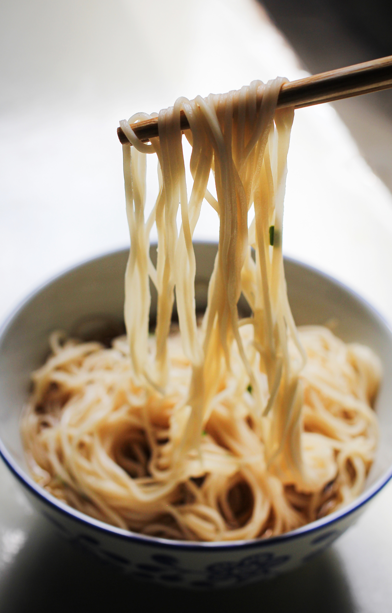

Como fazer um miojo:
Ingredientes:
Saquinho de tompero
Macarrao do minhojo
Agua
Modo de preparo
Coloque a agua para ferver.
Quando estiver fervendo, acrecente o miojo.
Ao termino de 3 minutos, retire o miojo e adicione o tempero.
